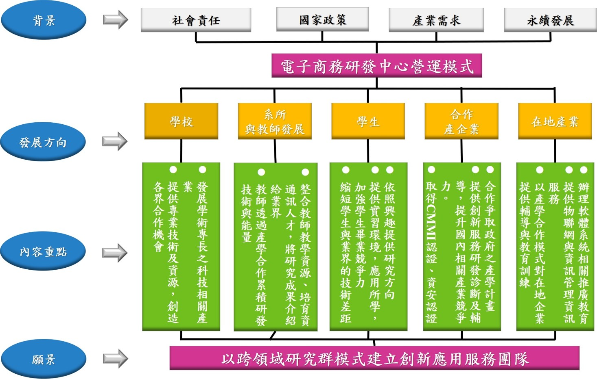

1.中心簡介
因應我國中小企業數位轉型浪潮襲來，物聯網、大數據分析、雲端運算和5G高速網路漸漸成為驅動各產業變革的核心能力，因此形成龐大的智慧物聯網技術人才需求與物聯網應用市場。據此，我國政府推動「5+2」(「亞洲‧矽谷」、「綠能科技」、「智慧機械」、「國防」、「生技醫藥」、「新農業」及「循環經濟」等)產業創新計畫，以加速產業升級轉型，作為驅動台灣下世代產業成長的核心。在科技農業方面，農委會於110年開始提出「農業物聯網發展計畫」，以台灣優良農業栽種技術為基礎，導入物聯網應用技術與AI人工智慧於農林漁牧業，建立智慧農業新典範，以達到提升糧食自給率、增加農業產值與創造就業機會的目標。本校地處臺灣熱帶農業產區，是全台175所大學校院中唯一以熱帶農業為發展特色的教學研究型大學，透過智慧物聯網、電子商務與5G高速網路技術之導入，更是仰賴資訊管理系的特色與專長，有鑒於此，電子商務研發中心為有效整校內及跨校之物聯網創新研發技術，提升研發能量，專注於物聯網系統設計與研發，同時積極培養人工智慧、物聯網、電子商務與高速網路人才，以利於未來台灣資通訊產業以及智慧物聯網、新一代5G網路產業發展。

本中心針對智慧物聯網、資訊系統建置與品牌行銷推廣，進行卓越的學術研究及產學合作。
2.發展方向
提供資通訊技術、智慧物聯網與資訊管理技術諮詢服務。
提供學生研發實習環境，並與系上跨領域實驗室結合，資源共用，讓學生享有多元學習資源，爭取就學就業學程與輔導計畫，藉由產學合作訓練學生業界實務經驗，縮短學生與業界技術差距。
建立產學合作機制，針對相關產業廠商提供輔導及教育訓練服務，並積極爭取政府相關單位(如經濟部、教育部或科技部)之產學計畫。
以跨領域(學院系所)研究群模式，形成學校之資訊管理技術服務窗口，承接產官學研究計畫，包括科技部計畫、教育部計畫、業界與學界委託系統研發計畫等。
承接學界與業界之資訊管理軟體系統、網路系統、電子商務系統以及物聯網系統之規劃、設計、研發製作與顧問徵詢。
3.營運模式

空間規劃